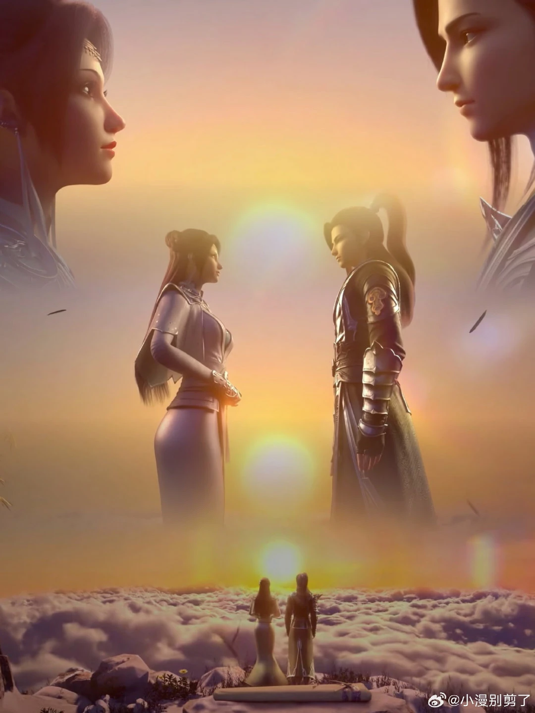

ទំនាក់ទំនង
អ៊ីន សាន (Yun Shan)
គេគឺជាគ្រូរបស់ អ៊ីន អ៊ីន រហូតដល់ពេលដែលគេបានសម្រេចចិត្តចុះចូលជាមួយ សំណាក់ព្រលឹង។ នៅទីបំផុត គេបានបិទខ្ទប់កម្លាំងធាតុរបស់ អ៊ីន អ៊ីន និងព្យាយាមបង្ខំនាងឱ្យរៀបការជាមួយ ហ្គូ ហ៊ឺ។ ជាសំណាងល្អ សៀវ យាន បានបង្ហាញខ្លួនទាន់ពេល ហើយបានបញ្ឈប់មង្គលការនោះ។
ណាឡាន យ៉ានរ៉ាន (Nalan Yanran)
នាងគឺជាកូនសិស្សរបស់ អ៊ីន អ៊ីន។ អ៊ីន អ៊ីន គឺជាអ្នកដែលបានអនុញ្ញាតឱ្យ ណាឡាន ទៅត្រកូលសៀវ ដើម្បីផ្ដាច់ពាក្យជាមួយ សៀវ យាន។ ទង្វើមួយនេះហើយដែលជាដើមហេតុបង្កឱ្យមានការប៉ះទង្គិចគ្នាយ៉ាងខ្លាំងរវាង សៀវ យាន និង បក្សពពកអ័ព្ទ។ ណាឡាន នៅតែបន្តតាមបម្រើគ្រូរបស់នាងជានិច្ច ទោះបីជា អ៊ីន អ៊ីន ចាកចេញពីនគរជៀម៉ាទៅចូលរួមជាមួយ បក្សផ្កា ក៏ដោយ។
សៀវ យាន (Xiao Yan)

គឺជាបុរសដំបូងគេដែលបានឆក់យកស្នាមថើបដំបូង របស់ អ៊ីន អ៊ីន ដែលធ្វើឱ្យទំនាក់ទំនងរបស់ពួកគេកាន់តែស្មុគស្មាញឡើងពីមួយថ្ងៃទៅមួយថ្ងៃ។ បក្សពពកអ័ព្ទរបស់នាង និង សៀវ យាន គឺជាសត្រូវស៊ីសាច់ហុតឈាមនឹងគ្នា ហើយ សៀវ យាន ថែមទាំងបានសម្លាប់ អ៊ីន សាន ដែលជាគ្រូរបស់នាងទៀតផង។
នាងមិនអាចនិយាយបានថានាងមានចិត្តស្អប់ទៅលើ Xiao Yan ឡើយ។ នាងយល់ច្បាស់ថា ទង្វើដែលបក្សពពកអ័ព្ទបានធ្វើដាក់ត្រកូល Xiao គឺជារឿងដែលមិនអាចអត់ឱនឱ្យបាន ដូច្នេះលទ្ធផលបែបនេះគឺជារឿងសមហេតុផល។
យុវជនម្នាក់ដែលនាងធ្លាប់រំពឹងទុកថាជារៀងរឹងមាំ ឥឡូវនេះពិតជាបានក្លាយជាកំពូលអ្នកក្លាហានដែលពឹងផ្អែកលើខ្លួនឯងបានមែន។ ប៉ុន្តែអ្វីដែលនាងមិននឹកស្មានដល់នោះគឺ នៅពេលដែលគេធំដឹងក្តី មនុស្សដំបូងដែលគេធ្វើឱ្យឈឺចាប់បំផុតបែរជាជារូបនាងទៅវិញ។
នាងបានសម្រេចចិត្តចាកចេញពីអាណាចក្រ Jia Ma ឆ្ពោះទៅកាន់តំបន់ទំនាបកណ្តាល (Central Plains)។ ទោះបីជា Xiao Yan ចង់ឱ្យនាងនៅក្បែរខ្លួនក៏ដោយ ប៉ុន្តែនៅពេលនោះនាងមានអារម្មណ៍ថាខ្លួនឯងមិនអាចធ្វើបានឡើយ។ ក្រោយមក Xiao Yan បានជួយសង្គ្រោះនាងចំនួន ២ ដង ហើយនៅទីបញ្ចប់ គេក៏បានអញ្ជើញនាងឱ្យត្រឡប់ទៅកាន់អាណាចក្រវិញដើម្បីរូបគេ។